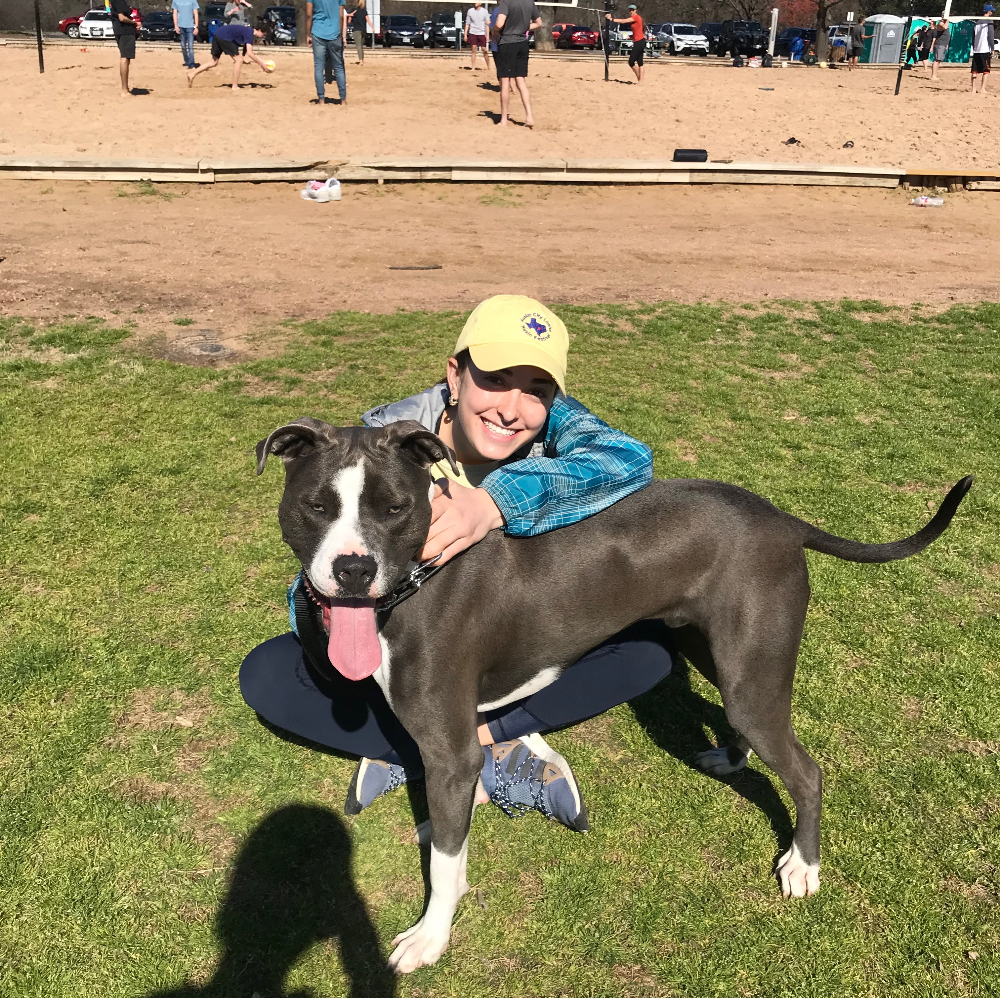

Hello, my name is Karla!
Welcome to my first self-made website!

A little bit about me...
I am a first-year student in the McCombs School of Business at the University of Texas at Austin. I was born and raised in El Paso, TX. I am fluent in English, Spanish, and have working knowledge of French. Some of my favorite past-times include yoga, travelling, and photogrpahy. I consider myself to be an adventuorus free spirit.
. . .
Click Here to go to my favorite site (it may also be your favorite site)
. . .
--Here's a glimpse of some of my favorite things--
